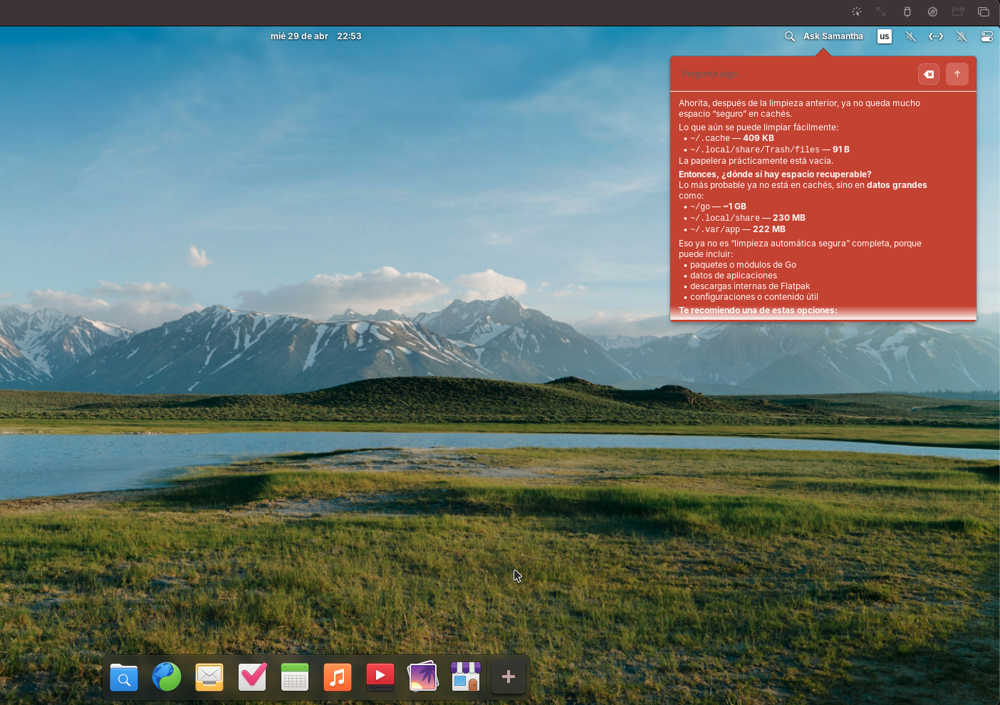

No estamos construyendo otro chatbot con skin de escritorio. La apuesta es que Samantha se sienta como una capability del sistema operativo: cercana al usuario, conectada al sistema y útil fuera de una pestaña del navegador.
We're not building another chatbot with a desktop skin. The bet is for Samantha to feel like an operating system capability: close to the user, connected to the system, and useful beyond a browser tab.
Si alguien me pregunta qué es Samantha OS, la respuesta corta es: una asistente integrada a elementary OS que puede conversar, operar el sistema y recordar contexto útil. La respuesta larga es que Samantha OS es la experiencia completa, mientras elementary-claw es el motor local que orquesta todo por debajo.
If someone asks me what Samantha OS is, the short answer is: an assistant integrated into elementary OS that can converse, operate the system, and remember useful context. The longer answer is that Samantha OS is the full experience, while elementary-claw is the local engine orchestrating everything underneath.
En lugar de abrir una web app aparte, Samantha vive en el panel del sistema, trabaja con rutas reales, usa aplicaciones nativas y puede cambiar de provider sin que toda la experiencia se vea rota. Eso es lo que hace distinto al proyecto.
Instead of opening a separate web app, Samantha lives in the system panel, works with real paths, uses native applications, and can switch providers without making the whole experience feel broken. That's what makes the project different.

1. Qué es Samantha OS1. What Samantha OS is
Samantha OS es una asistente de escritorio pensada para sentirse nativa dentro de elementary. No intenta reemplazar al sistema operativo: intenta convertirse en una capa útil sobre él, como si hablar con tu máquina fuera una capacidad normal del escritorio.
Samantha OS is a desktop assistant designed to feel native inside elementary. It doesn't try to replace the operating system: it tries to become a useful layer on top of it, as if talking to your machine were a normal desktop capability.
La interfaz visible corre en Wingpanel y se integra con el lenguaje visual del sistema. Pero lo importante no es solo dónde aparece, sino lo que puede hacer desde ahí: entender contexto, abrir aplicaciones, leer o escribir archivos dentro de sus límites y mantener continuidad entre sesiones.
The visible interface runs in Wingpanel and integrates with the system's visual language. But what matters isn't just where it appears, it's what it can do from there: understand context, open applications, read or write files within its boundaries, and keep continuity across sessions.
Experiencia nativaNative experience
Wingpanel + Vala + GTK. Samantha aparece donde vive el sistema, no como una ventana prestada.
Wingpanel + Vala + GTK. Samantha appears where the system lives, not as a borrowed window.
Runtime localLocal runtime
elementary-claw coordina providers, sesiones, memoria, tools y respuestas del asistente.
elementary-claw coordinates providers, sessions, memory, tools, and assistant responses.
Capacidades realesReal capabilities
Abrir Terminal, Files, navegador o editor, además de operar sobre contexto y memoria útiles.
Open Terminal, Files, browser, or editor, while also operating on useful context and memory.
Providers flexiblesFlexible providers
Samantha no depende de un solo proveedor; puede cambiar de backend sin romper la experiencia del usuario.
Samantha doesn't depend on a single provider; it can switch backends without breaking the user experience.
2. Qué es elementary-claw y dónde entra2. What elementary-claw is and where it fits
elementary-claw es la pieza que conecta la interfaz de Samantha con el resto del sistema. No es el nombre “bonito” del producto; es el runtime local que recibe mensajes, resuelve qué modelo usar, prepara contexto, llama tools y devuelve una respuesta o una acción.
elementary-claw is the piece that connects Samantha's interface to the rest of the system. It's not the user-facing product name; it's the local runtime that receives messages, decides which model to use, prepares context, calls tools, and returns either a response or an action.
Wingpanel UI (libsam.so)
↓
elementary-claw
↓
models + memory + tools + desktop appsEsa separación es importante porque aclara la arquitectura del proyecto: Samantha OS es la experiencia y elementary-claw es la infraestructura. Una vive en el panel y en la UX; la otra vive en el enrutamiento, las sesiones, la memoria y la integración con el escritorio.
That separation matters because it clarifies the project's architecture: Samantha OS is the experience and elementary-claw is the infrastructure. One lives in the panel and the UX; the other lives in routing, sessions, memory, and desktop integration.
EntradaInput
El usuario habla con Samantha desde el panel de elementary OS, como parte natural del escritorio.
The user talks to Samantha from the elementary OS panel, as a natural part of the desktop.
OrquestaciónOrchestration
elementary-claw decide provider, contexto, memoria y tools según lo que el usuario pidió.
elementary-claw decides on provider, context, memory, and tools based on what the user asked for.
Respuesta o acciónResponse or action
Samantha responde en lenguaje natural o ejecuta una acción del sistema sin sacar al usuario del flujo.
Samantha replies in natural language or performs a system action without pulling the user out of the flow.
La idea claveThe key idea
Cuando alguien dice “explícame qué es Samantha OS”, la mejor respuesta ya no es listar features sueltas. Es explicar esta relación: producto arriba, runtime abajo, y el escritorio real como entorno de trabajo.
When someone says “explain what Samantha OS is,” the best answer is no longer a list of isolated features. It's this relationship: product on top, runtime below, and the real desktop as the working environment.
3. Qué puede hacer Samantha3. What Samantha can do
La promesa de Samantha no es responder texto bonito. Es poder combinar lenguaje con acciones concretas dentro del sistema. Eso incluye conversación, contexto, memoria y operaciones reales sobre el escritorio.
Samantha's promise isn't to produce nice text. It's to combine language with concrete actions inside the system. That includes conversation, context, memory, and real operations on the desktop.
Conversar desde el panelTalk from the panel
La interacción empieza donde ya vives: arriba, dentro del sistema, sin abrir otra app web.
Interaction starts where you already live: up top, inside the system, without opening another web app.
Abrir el entorno realOpen the real environment
Puede lanzar Terminal, Files, el editor o el navegador y posicionarse en la ruta o URL correcta.
It can launch Terminal, Files, the editor, or the browser and land on the right path or URL.
Recordar contexto útilRemember useful context
La memoria no depende de “magia del modelo”; forma parte del runtime y puede persistir entre sesiones.
Memory doesn't depend on “model magic”; it's part of the runtime and can persist across sessions.
Recuperarse de fallosRecover from failures
Si un provider falla o cambia el flujo de autenticación, Samantha puede reconducir la experiencia.
If a provider fails or the auth flow changes, Samantha can redirect the experience gracefully.
4. Por qué hacerlo sobre elementary OS4. Why build it on top of elementary OS
elementary OS tiene algo valioso para este experimento: una superficie limpia, coherente y suficientemente controlada para que la integración se sienta de producto y no de hack improvisado. Wingpanel, las apps nativas y el flujo del escritorio ayudan a que Samantha tenga un lugar natural.
elementary OS gives this experiment something valuable: a clean, coherent, and controlled enough surface for the integration to feel like a product instead of an improvised hack. Wingpanel, native apps, and the desktop flow give Samantha a natural place to live.
También obliga a tomarse en serio los detalles del sistema: nombres reales de apps, permisos, rutas, comportamiento del panel y diferencias entre una demo local y una máquina que corre el entorno completo. Justo por eso el proyecto se beneficia tanto de probarse dentro de una VM real de elementary OS.
It also forces us to take system details seriously: real app names, permissions, paths, panel behavior, and the difference between a local demo and a machine running the full environment. That's exactly why the project benefits so much from being tested inside a real elementary OS VM.
Por qué la VM sigue importandoWhy the VM still matters
Un asistente de escritorio no se valida solo con mocks. Hay que verlo correr con el panel real, las apps reales y los errores reales del sistema operativo.
A desktop assistant can't be validated with mocks alone. You need to see it run with the real panel, real apps, and real operating-system errors.
Lección del productoProduct lesson
Si Samantha quiere sentirse nativa, no basta con que “responda bien”. Tiene que ubicarse bien en el sistema, fallar con elegancia y ayudar de verdad en tareas del escritorio.
If Samantha wants to feel native, it's not enough for it to “answer well.” It has to fit the system well, fail gracefully, and genuinely help with desktop tasks.
5. En qué estado está hoy5. Where it stands today
Hoy Samantha ya tiene una forma reconocible: panel nativo, runtime local, memoria persistente, tools del sistema y pruebas dentro de una VM de elementary OS. Todavía está evolucionando, pero ya no se siente como una idea abstracta.
Today Samantha already has a recognizable shape: native panel, local runtime, persistent memory, system tools, and testing inside an elementary OS VM. It's still evolving, but it no longer feels like an abstract idea.
Lo más valioso es que la arquitectura ya cuenta una historia clara: la UI vive en Samantha OS, la orquestación vive en elementary-claw, y el objetivo no es impresionar con una demo sino construir una asistente que encaje de verdad con el escritorio.
What's most valuable is that the architecture now tells a clear story: the UI lives in Samantha OS, orchestration lives in elementary-claw, and the goal isn't to impress with a demo but to build an assistant that truly fits the desktop.
6. Qué sigue6. What's next
Lo que sigue es pulir la UX, ampliar herramientas, fortalecer autenticación y seguir cerrando la distancia entre “asistente de IA” y “feature del sistema operativo”. Esa es la dirección correcta para Samantha.
What's next is polishing the UX, expanding tools, strengthening authentication, and continuing to close the gap between “AI assistant” and “operating system feature.” That's the right direction for Samantha.
En otras palabras: este post ya no es solo una lista de fixes. Es la definición del proyecto. Samantha OS es la experiencia; elementary-claw es el motor; elementary OS es el hogar donde todo eso tiene sentido.
In other words: this post is no longer just a list of fixes. It's the definition of the project. Samantha OS is the experience; elementary-claw is the engine; elementary OS is the home where all of that makes sense.